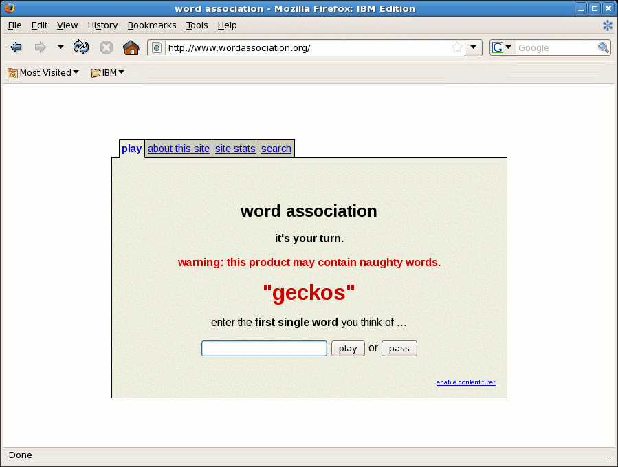
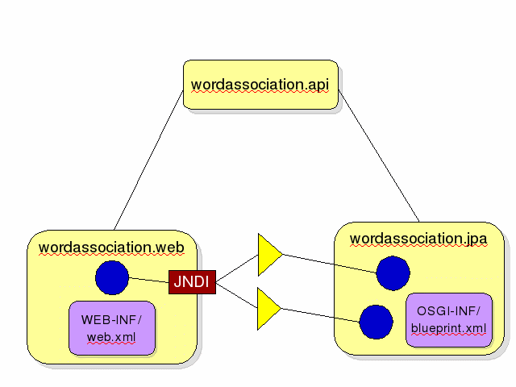

The Word Association application shows a very simple example of a realistic application architecture. The intention is that it can be coded up from scratch in front of a live audience, rather than that it demonstrate best practices or more complex patterns. A reference copy of the finished application is included with these instructions.
The word association application is so trivial that it may seem like a pretty contrived example. After all, no one would actually bother write a word association web app, would they?
Apparently, if it can be done, someone's already done it:
Things can go wrong in unexpected ways in live demos, so do have a practice run before trying to write the words application in front of other people. I've known of people who practice the live coding parts of their demos twenty times before a presentation, although that might be a bit too much preparation for most of us! The troubleshooting tips may help debug common problems. A working copy of the application is provided for reference, so you can refer to it if things go slightly wrong, or swap in pre-built bundles for broken bundles if things go very wrong.
Italicized text is instructions to the person giving the demo. Most of the rest of the text of this document is a sample script for a demo.
The instructions assume the free version of the IBM Rational Tools for OSGi Applications are being used. The demo will work fine without them, but some of the steps for project creation and project export will be different. Follow these instructions for installing the tools (or use Eclipse marketplace). Try to get comfortable with using the ctrl-space content assist for almost all your typing - it will speed the process of producing the code and xml up considerably.
You'll need to add a variable called java_home. Go to Window→Preferences→Run/debug→String substitution and add a variable called java_home which points to your java home.
The database will be automatically created when the words-assembly build is run. It can be found in the target directory of the words-assembly project after it has been built.
The words-assembly includes a datasource bundle already. This is a minor sleight-of-hand, but coding up the datasource in front of a live audience and ensuring it loads before the jpa bundle doesn't add much value pedagogically.
You can make some changes in your workspace beforehand which will make the demo faster. What works well is deleting the created projects at the end of a demo but keeping the actual workspace so that the templates and builders can be re-used.
You'll need to be using the JEE perspective or some of the instructions won't make sense, so switch to that perspective before the demo.
The application has the minimum necessary amount of code, but it's possibly still more than you'll want to type in front of an audience. There are two strategies for avoiding the typing. One is to dual-head the laptop and keep a file on the non-projected screen from which you can cute and paste. The other is to set up some eclipse templates.
Navigate to Preferences→Java→Editor→Templates. Select Import, and choose java-templates.xml. You should get three new templates, dopost, doget, and webform.
Navigate to Preferences→XML→XMLFiles→Editor→Templates. Select Import, and choose xml-templates.xml. You should get three new templates, recorder, lister, and jpans.
We need some plugins which don't ship with the Eclipse WTP platform by default, and want to ensure we don't introduce dependencies on bundles which aren't in our assembly. We do this by defining a new target platform.
Navigate to and then navigate to . Select the button, accept the Initialize with 'nothing' option on the next panel. Choose again on the Target Content panel, accept the 'Directory' default in the list, and browse to the words-assembly/target directory. Choose . The words-assembly should show in the list, with around 40 plugins. Make sure all the plugins are selected. (If the list of plugins is empty, build the words-assembly and then choose . Click , and you should now have a list of target platforms which includes your new platform. Select it so that it is checked as the default target platform.
If you're running in a JEE-5-application server, JPA entities will be automatically enhanced. We're just running in a little OSGi container, so we need to do that ourselves.Normally an ant task would be used to enhance the entities when building, but it can also be done using an eclipse builder. Most of the work to set up the builder can be done in advance.
In your workspace, select External Tools from the toolbar. (It's the play icon with what looks like a little red suitcase on it.) Select External tool configurations ... from the menu, highlight Program in the panel on the left of the wizard, and then click the new icon from the toolbar within the wizard (it's the white rectangle with the little yellow cross in the corner).
Fill in JPA_enhancer for the name. Move to the Location field and fill in the full path to the java executable, as follows:
${java_home}/jre/bin/java
Fill in the following in the Arguments box:
-cp ${target_home}/openjpa-all-2.0.0.jar:${build_project}/src org.apache.openjpa.enhance.PCEnhancer ${build_files}
(The variables will be filled in by eclipse when the enhancer builder run.)Eclipse needs to be told where to find the JPA implementation. The easiest way to do this is create a new OSGI project. (We'll delete it at the end.)
Create a new OSGi bundle project by bringing up a context menu in the package explorer and selecting New→Other→OSGi→OSGi Bundle Project., and choose a JPA facet. Type 'eraseme' for the name, and accept the defaults for everything else. Click next and keep clicking next until you get to the panel called JPA facet (about three panels in).
The platform should be Generic 2.0 and the type should be User Library. Create a library by clicking on the little book icon to the right of the list of libraries. Click New, fill in jpa_library for the name, and click OK. With the new jpa_library library highlighted, click the Add jars button, and navigate to the geronimo-jpa_2.0_spec-1.0.jar (it will be in your words-assembly). Accept the defaults for the other parameters and finish. Even after deleting the eraseme project, the library will be saved in your workspace for re-use. (Don't delete the eraseme project until you've set up the launch configuration.)
The words jars can be run in two ways, either by exporting them and adding them to the assembly and launching an OSGi framework from the command line, or by running the projects within Eclipse. Running within eclipse is faster and usually looks better for the demo.
Copy the "Words launch configuration.launch" file into the eraseme project and refresh.
Navigate to the Run icon (the large green arrow on the toolbar), bring up the dropdown menu, and select Run configurations.... The Words launch configuration should be listed in under OSGi Frameworks. Verify that all the plugins in the target platform are selected. Navigate to the Arguments tab, and confirm that the arguments include:
-Dorg.osgi.framework.system.packages.extra=javax.transaction;version=1.1.0,javax.transaction.xa;version=1.1.0 -Xbootclasspath/p:${target_home}/geronimo-jta_1.1_spec-1.1.1.jarThis ensures the OSGi framework exported the JTA packages at version 1.1, which is the version expected by Apache Aries, and the second thing it does is add the extra classes onto the JVM boot classpath.
On the same tab, the working directory should be ${target_home}.Finally, you need to ensure the launch configuration survives when you delete the eraseme project. To do this, navigate to the Common tab and change the radio button from Shared file to Local file.
Delete the eraseme project (including its contents on disk) and make sure that the Words launch configuration is still available in the Run configurations menu.
This demo involves a lot of live coding, so there is a possibility of things going wrong. In the event of demo accidents, it may be best to swap in the 'official' version of the problem jar or project. Of course, you'll want to confirm the official versions will work before starting. The official versions can be used in two ways, either on the command line, or as eclipse projects launched within eclipse.
Copy all the words bundles - except for the datasource jar - into the load directory of the words-assembly directory.
cd words-assembly/target mkdir load cp ../../words-api/target/*.jar load cp ../../words-web/target/*.jar load cp ../../words-jpa/target/*.jar load
Launch the OSGi container (from words-assembly/target).
java -jar osgi-3.5.0.v20090520.jar -clean -console
Confirm that http://localhost:8080/words-web/AssociateWord URL works.
Don't forget to remove the official jars before the demo starts - but do keep them somewhere handy for emergencies. A directory called backup in the target directory is a good place.
Within Eclipse, right click to bring up the context menu and chose Import→Import→General→Existing projects into workspace. Make sure the Select root directory radio button is selected and browse to the words-sample directory. Select all the projects except the the words-datasource project. Make sure that the Copy projects into workspace option is selected and import.
You can also import the eclipse projects into your workspace, which will add them to the launch configuration.
The first time you practice the demo, it may take an long time. It may seem like you'll never manage to write a whole web application in a short enough time. However, with a few practice runs you should get pretty quick at it. It should be possible to do the whole demo in around half an hour, or less if you pre-can some parts of some of the bundles.
Do remember to print out a copy of these instructions to take with you during the demo.
We're going to write a web application which plays a game of word association with a user. The application has three components - there's a web front end, a back end which handles the data and persistence using JPA. We want the front end and back end to be loosely coupled, so there's a third component which is a set of shared APIs.
It can be helpful to show the following architecture diagram:
What we're going to be running the application on is a little OSGi container embedded in Eclipse. Aries can also sit on top of a full JEE server, like Geronimo, and that's probably a more typical way of using it.
It should be possible to do the whole of the demo without restarting the OSGi console.
What we need to do now is create the bundles which make up our application. A bundle is a jar which some extra-metadata, and so it's easy to create using your favourite IDE. Eclipse has lots of OSGi support, and there's also a set of free tools which have extra support for Aries, so I'll be using those, but all of this can easily be done in another IDE, with base eclipse, or on the command line for the very hardcore.
We start off with a shared API. We want everything to be loosely coupled, so we'll have a bundle with interfaces.
Right click, New→Other→OSGi→OSGi Bundle project (or type OSG in the box to filter). Fill in the name words.api and click Finish.
We're going to play a game of word assocation, so we need a service that gives us a word to associate with.
Right click on the newly created project, do New→Interface, and
Package: org.apache.words Name: WordGetterService.
Add the following method:String getRandomWord();
We'll also want to do some sort of analysis on what associations people make, so we'll add an association recorder service.
Right click on the newly created project, do New→Interface, and
Package: org.apache.words Name: AssociationRecorderService.
Add the following method:
void recordAssociation(String word, String association);
It's no use making a note of what associations have been made if we can't access that data, so we'll add one more method:
String getLastAssociation(String word);
The default in OSGi is for classes to be private to a bundle, but this is an API, so we declare that everyone can use these interfaces.
Double-click on the manifest, click on the runtime tab, and click Add. Select the words package. Select manifest tab to show the change which has been made.
Making that package visible externally is just a question of adding a line in the bundle manifest.
Finish off by exporting the bundle. Right click on the project, choose Export, and then navigate to OSGi→OSGi Bundle. Choose the load directory of your assembly for the export location and click Finish. Go back to the OSGi console and type ss again. The new bundle should have appeared in the framework. The GOAT tool could also be used to show the bundle appearing.
Now that we have our interfaces for our services, we're going to create our web front-end.
Make the project for the web front end. Right click, New→Other→OSGi→OSGi Bundle project. Fill in the name words-web Select 'OSGi Web Configuration' from the configuration drop-down. Click Finish.
Expand the Deployment Descriptor twistie. (If it's not there, make sure you're in the JEE perspective.)
Right-click on Servlets to create a new servlet.
Enter the following.
package name: org.apache.words.web
class name: AssociateWord
Click Finish. It will auto-create the servlet.
There will be compile errors. This is the first point at which we're starting to see it's OSGi. Normally, we'd have to change the eclipse classpath to add the javax.servlet jar. Well, that's actually the second step. First of all we'd have to work out what jar the HttpServlet class is in. How many of you have got good at doing 'grep -r' on your system to figure out what jar a class is in?
In this case, we just declare that we're have a dependency on the javax.servlet and javax.servlet.http packages. To do that, we open our manifest and enter it as a dependency. Eclipse will even give us content completion, but we can also enter it by hand on the manifest
Expand WebContent→META-INF→MANIFEST.MF and double click. Add the package to the top-right box on the dependencies tab.
We're also going to want to use our api, so we'll add that dependency now too.
Click Add, enter *word* and select the words package. Switch tabs to show the change which has been made to the manifest. Then navigate back to the AssociateWord class
We need to fill in some html boilerplate in the doGet() method so that our servlet sends back some html.
Type 'dog', hit ctrl-space, and select the doget template from the content assist. You should now have the following code:
PrintWriter out = response.getWriter(); out.println("<html>"); out.println("</html>");
What our servlet will do is prompt the user with a random word which it gets from the word getter service.
Navigate to between the two lines for the html element creation and fill in the html to print out the random word:
WordGetterService getter = null; String randomWord = getter.getRandomWord(); out.println("The word is " + randomWord);
So do you think this is going to work? I don't think so either - we're using a service, but we haven't written any implementation for it. We better put some failsafes in.
Add guards around the getter dereference:
if (getter != null) {
and} else { out.println("Oh dear. Our dependencies haven't been found."); }
Now we've given the user a word, and we want them to give us back a word they associate with it. We do this with html input.
Move the cursor back to below the out.println which prints the random word and add the following using the webform content assist template.
out.println("
);
out.println("<form action=\"AssociateWord\" method=\"post\">");
out.println("What do you associate with "
+ randomWord
+ "? <input type=\"text\" name=\"association\" /> <br /> ");
out.println("<input type=\"hidden\" name=\"word\" value=\""
+ randomWord + "\"/>");
out.println("<input type=\"submit\" name=\"Submit\"/>");
out.println("</form>");
When the user submits the form, we want to tell them what other things have been associated with that word.
Add the following content to the doPost() method using the dopost template:
String word = request.getParameter("word"); String association = request.getParameter("association"); AssociationRecorder recorder = null; String previousAssociation = null; if (recorder != null) { previousAssociation = recorder.getLastAssociation(word); recorder.recordAssociation(word, association); } PrintWriter out = response.getWriter(); out.println("The last person associated " + word + " with " + previousAssociation);
You can now try it out using the launch configuration. If you navigate to http://localhost:8080/words-web/AssociateWord and there should be a message about missing dependencies.
Now we've got a basic web front end. However, we're relying on services and we haven't done anything to get those services. There are three ways we can get our services. One is the normal OSGi way of looking them up in a bundle context. Aries adds the possibility of dependency injection, and also a JEE-integration which allows looking them up in JNDI. Blueprint dependencies can't be injected into a servlet, because a servlet is a JEE kind of artefact and we don't control its lifecycle - this is the same as you get with spring, dependency injection doesn't work with spring. Instead we'll look them up in JNDI. This is the first thing we're doing which is specific to Aries. Normally you can have a JEE bundle, or you can have an OSGi bundle, but there's not much integration between the two. Here Aries is providing a compatibility layer between the servlet, which is managed by the JEE container, and all the great OSGi services we're going to want to use.
This is an OSGi bundle, and InitialContext isn't shipped as an OSGi bundle, so we need to add Import-Package: javax.naming. We could also use @Resource here.
Navigate back to the manifest and add a dependency on javax.naming.
Add the following code to the beginning of the doGet() method (after declaring the getter variable). You'll also need to set the getter to be null when you declare it. It may be easier to not type the try-catch and add it in by using ctrl-1 while hovering over the compile-error:
try { getter = (WordGetterService) new InitialContext() .lookup("aries:services/" + WordGetterService.class.getName()); } catch (NamingException e) { e.printStackTrace(); }
AssociationRecorder recorder = null; try { recorder = (AssociationRecorderService) new InitialContext() .lookup("aries:services/" + AssociationRecorderService.class.getName()); } catch (NamingException e) { e.printStackTrace(); }
(It may be worth defining a template for these pieces of code as well - there's more argument for typing them out in full since they're conceptually quite important.)
Launching the launch configuration and navigating to http://localhost:8080/words-web/AssociateWordwords should bring up a web page that's blank. There will be lots of stack traces about the missing dependencies since that's how we chose to handle our missing dependencies - perhaps not the best technique!
The JPA project is the most complex project and you may wish to pre-create part of the project - for example, the base project, the manifest, and the persistence.xml definitions.
Create another OSGi bundle project, call it words-jpa, and choose a JPA facet. The Finish button should be enabled.
(If the finish button isn't enabled, click through until prompted to choose a library on the JPA facet panel. Select the jpa_library library you created earlier. Accept the defaults for the other parameters and finish.)
This new project is going to implement the words services, so We need to add a dependency on the words API.
Navigate to the manifest, and add the package which comes up if you type *word* into the filter box.
Note that *word* doesn't show any code from our web bundle, because we wanted to keep that private.
If you're running in a JEE-5-application server, JPA entities will be automatically enhanced. We're just running in a little OSGi container, so we need to do that ourselves. Normally you'd use an ant task to enhance the entities, but we're running in Eclipse, so we'll add an eclipse builder.
Right-click on the project, select Properties, choose Builders, then Import. Choose the JPA launcher you defined earlier. You should see the following message in the console following each build:
132 words-jpa INFO [main] openjpa.Tool - No targets were given. Running on all classes in your persistent classes list, or all metadata files in classpath directories if you have not listed your persistent classes. Use -help to display tool usage information.
You will also need to add some package dependencies. Add depencies on javax.persistence, org.apache.openjpa.enhance, and org.apache.openjpa.util.
Import-Package: javax.persistence, org.apache.openjpa.enhance, org.apache.openjpa.util, org.apache.words
Right-click on the words-jpa project and choose New→Entity. Fill in org.apache.words.jpa for the package and Association for the class name. Choose Next and add 'word' and 'associated' entity fields. Use 'String' as the type and 'word' and 'associated' as the names. (Make sure to use associated and not association as the field name!)
There will be a compile error because there is no primary key, so add a primary key for the word field:
@Id private String word;
Now we get a compilation error, because we have a dependency on org.apache.openjpa.enhance. Normally we'd have to work out which jar this came from and add it to the classpath, and if we're sharing the project adding the jar to the classpath in a portable way is a bit of a nuisance. Instead we can just add the org.apache.openjpa.enhance package to our dependencies.
Navigate to the manifest and add an import-package for org.apache.openjpa.enhance.
Expand the newly created project, expand JPA content, and
open persistence.xml. On the general tab, make sure the Association
class is on the list of managed classes, and
aries:services/javax.sql.DataSource/(osgi.jndi.service.name=jdbc/wordsdb)
Here we're again making use of the JNDI integration Aries provides to point JPA at the JNDI mapping of a datasource we've defined as an OSGi service.
We want to declare the services, and we do this by creating an xml file with the service definitions in it.
Create a blueprint.xml by New→Other→OSGi→blueprint.xml or right-clicking on the project and choosing OSGi→Create a new blueprint file
We now need to fill in some namespaces manually, to indicate that we're not just going to be using this blueprint.xml for dependency injection - we're going to use to get integration with our transaction and persistence providers so that they get injected too. We do this by adding the following namespace to our blueprint xml.
Navigate to the blueprint element and use ctrl-space to bring up the content assist, and choose the jpans template. It should fill in the following:
xmlns:jpa="http://aries.apache.org/xmlns/jpa/v1.0.0" xmlns:tx="http://aries.apache.org/xmlns/transactions/v1.0.0"
The blueprint.xml file is one of the most important files in an Aries application. It's where we declare dependency injections, container-managed persistence, and container-managed transactions. It also allows us to create services declaratively. Normally an OSGi service would be registered at runtime, by Java code, but that doesn't have a very enterprise feel to it. What Aries allows us to do is register services declaratively in XML instead.
Add a bean and service definition for the association recorder using the recorder template. You should end up with the following:
<service interface="org.apache.words.AssociationRecorderService" ref="recorder" /> <bean class="org.apache.words.jpa.Recorder" id="recorder"> <jpa:context property="entityManager" unitname="words-jpa" /> <tx:transaction method="*" value="Required" /> </bean> <service>
The unit name should match the one defined in persistence.xml.
Define a new class org.apache.words.jpa.Recorder which implements the AssociationRecorderService. Use the new class wizard to fill in stubs for the interface methods.
Create a field for the entity manager and right click, choose Source→Generate getters and setters and generate a setter (but no getter).
private EntityManager entityManager;
public void setEntityManager(EntityManager entityManager) { this.entityManager = entityManager; }
The cool thing here is that we didn't have to do anything to initialize the JPA entity manager - it gets injected for us. Now we just need to fill in the logic to handle persisting our data.
Fill in the following contents for recordAssociation() using the recordAssociation template.
Association found = entityManager.find(Association.class, word); if (found != null) { found.setAssociated(association); } else { Association a = new Association(); a.setWord(word); a.setAssociated(association); entityManager.persist(a); }
and getLastAssociation() using the getLastAssociation template
Association found = entityManager.find(Association.class, word); if (found != null) { return found.getAssociated(); } else { return "nothing"; }
Finally, we need to provide a service which returns words to make the associations with. We could have this service backed by a database, but it would look pretty similar to the recorder service, so for testing we'll just use a static list instead.
Navigate back to the blueprint.xml and add a declaration for the service using the lister template. You should end up with the following:
<service interface="org.apache.words.WordGetterService"> <bean class="org.apache.words.jpa.WordLister" /> </service>
Create a WordLister class, have it implement WordGetterService in the class creation wizard and fill in the following content around the boiler-plate. You can ask the audience to supply the three words to keep them awake.
public class WordLister implements WordGetterService { String[] words = { "computers", "Java", "coffee" }; public WordLister() { } @Override public String getRandomWord() { return words[new Random().nextInt(words.length)]; }
Launch the launch configuration. Revisiting the web application URL should bring up a web application which handles both prompting for a word association and telling users what previous users came up with. Making the associations should provide another opportunity for people in the audience to get involved by calling out word associations.
For a longer demo, consider some of the following.
If there's time, we can assemble our bundles into an application. The free tools provide support for this. Create a new project of type OSGi Enterprise Application, provide a name and choose Next, and then add the words bundles to it as a contained bundles and export.
We can add a second bundle with a different lister service and show how we can switch between the two bundles using the OSGi console.
<exclude-unlisted-classes>true</exclude-unlisted-classes>
<openjpa-2.0.0-r422266:935683 nonfatal general error> org.apache.openjpa.persistence.PersistenceException: Error extracting class information from "bundleresource://42.fwk1060257586/". at org.apache.openjpa.kernel.AbstractBrokerFactory.newBroker(AbstractBrokerFactory.java:208) at org.apache.openjpa.kernel.DelegatingBrokerFactory.newBroker(DelegatingBrokerFactory.java:156)
If importing the existing projects into an Eclipse WTP/OSGi Application Tools installation, it's necessary to create an OpenJPA user library by navigating to Window→Preferences→Java→Build Path→User libraries and creating a new library called OpenJPA which includes the geronimo-jpa and org.apache.aries.jpa.container jars.